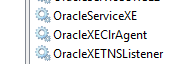
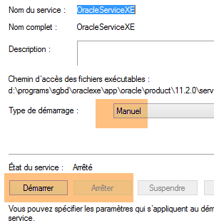
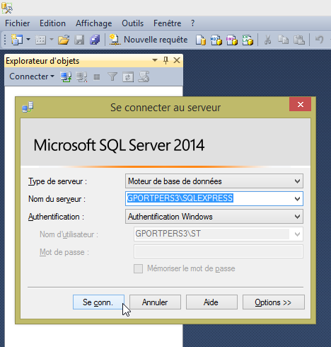
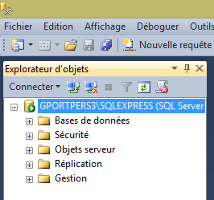
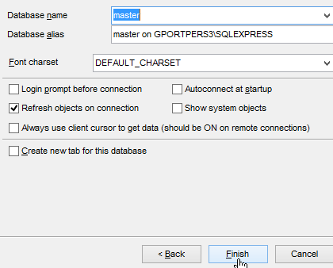
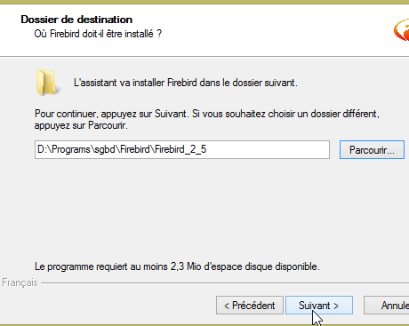
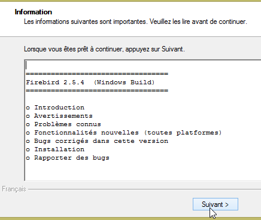

23. Anexos
Aqui explicamos como instalar as ferramentas utilizadas neste documento em máquinas com Windows 7 ou 8. As capturas de ecrã mostram geralmente as versões de 64 bits do SGBD e das ferramentas instaladas. O leitor deve adaptar-se ao seu próprio ambiente.
23.1. Instalação de um JDK
O JDK mais recente pode ser encontrado no URL [http://www.oracle.com/technetwork/java/javase/downloads/index.html] (outubro de 2014). Doravante, referir-nos-emos ao diretório de instalação do JDK como <jdk-install>.
23.2. Instalação do Maven
O Maven é uma ferramenta para gerir dependências num projeto Java e muito mais. Está disponível (outubro de 2014) no URL [http://maven.apache.org/download.cgi].
Descarregue e descompacte o arquivo. Iremos referir-nos ao diretório de instalação do Maven como <maven-install>.
- Em [1], o ficheiro [conf/settings.xml] configura o Maven;
Contém as seguintes linhas:
<!-- localRepository
| The path to the local repository maven will use to store artifacts.
|
| Default: ${user.home}/.m2/repository
<localRepository>/path/to/local/repo</localRepository>
-->
O valor padrão na linha 4 pode causar problemas para alguns softwares que utilizam o Maven se, tal como eu, o seu caminho {user.home} contiver um espaço (por exemplo, [C:\Users\Serge Tahé]). Iremos especificar (linha 7) uma pasta diferente para o repositório local do Maven:
<!-- localRepository
| The path to the local repository maven will use to store artifacts.
|
| Default: ${user.home}/.m2/repository
<localRepository>/path/to/local/repo</localRepository>
-->
<localRepository>D:\Programs\devjava\maven\.m2\repository</localRepository>
Na linha 7, evite utilizar um caminho que contenha espaços.
Iremos instalar o SpringSource Tool Suite [http://www.springsource.com/developer/sts] (outubro de 2014), um ambiente Eclipse pré-configurado com vários plugins relacionados com o framework Spring e também com uma configuração do Maven pré-instalada.
- Aceda ao site do SpringSource Tool Suite (STS) [1] para descarregar a versão atual do STS [2A] [2B].
- O ficheiro descarregado é um instalador que cria a estrutura de diretórios [3A] [3B]. Em [4], executamos o ficheiro executável,
- em [5], a janela do espaço de trabalho do IDE após fechar a janela de boas-vindas. Em [6], exibe a janela dos servidores de aplicações,
- em [7], a janela dos servidores. Está registado um servidor. Trata-se de um servidor VMware compatível com o Tomcat.
Deve especificar o diretório de instalação do Maven ao STS:
- em [1-2], configure o STS;
- em [3-4], adicione uma nova instalação do Maven;
- em [5], especifique o diretório de instalação do Maven;
- em [6], conclua o assistente;
- em [7], defina a nova instalação do Maven como padrão;
- Em [8-9], verifique o repositório local do Maven — a pasta onde serão armazenadas as dependências descarregadas e onde o STS colocará os artefactos compilados;
Deve também selecionar um JDK (Java Development Kit) para executar projetos Eclipse com e sem o Maven [1-5].
Com [4], pode adicionar JDKs (Java Development Kits) ou JREs (Java Runtime Environments). Estes últimos podem executar ficheiros .class, mas não podem compilar ficheiros .java para os produzir. O JDK pode fazer ambas as coisas. Deve escolher um JDK porque certas operações do Maven requerem um.
Para criar um projeto Eclipse, proceda da seguinte forma:
- Em [3], atribua um nome ao projeto;
- em [4], selecione uma pasta existente e vazia;
- em [5], o projeto é criado;
- em [5-8], crie um pacote. Um pacote é uma pasta que contém código Java. Duas classes podem ter o mesmo nome se pertencerem a pacotes diferentes. Dentro de um projeto, não pode haver dois pacotes com o mesmo nome. Portanto, não pode utilizar um nome de pacote que já exista numa das dependências do projeto. Uma empresa utilizará um nome de pacote que especifique a empresa, o projeto e as suas várias ramificações;
- em [9], atribua um nome ao pacote;
- em [10], o pacote criado;
- em [11-13], crie uma classe dentro do pacote que foi criado;
- em [14], nomeie a classe (deve seguir a convenção CamelCase — cada palavra no nome deve começar com uma letra maiúscula seguida de letras minúsculas);
- em [15], verifique o pacote;
- em [16], marque a caixa. Isto solicita que o método estático [main] seja gerado. Este método torna uma classe executável, ou seja, a primeira classe a ser executada num projeto;
- em [17], a classe assim criada;
Digite o seguinte código no método [main], que exibe texto na consola:
package st.istia;
public class Test01 {
public static void main(String[] args) {
System.out.println("test01");
}
}
- Em [18-20], execute a classe. O seu método [main] será então executado;
- em [21-22], o resultado da aplicação;
Se a vista [Console] não estiver presente, proceda da seguinte forma [1-4]:
Ao importar um projeto Eclipse, este pode conter erros. Isto pode dever-se a uma configuração incorreta do projeto. Para corrigir o erro (se houver), proceda da seguinte forma:
- Em [1], modifique o [Build Path] do projeto;
- Em [2], o projeto está configurado para utilizar uma JVM 1.5;
- Em [3], remova esta dependência;
- em [4], adicione uma nova dependência;
- em [5], adicione uma JVM;
- Em [6], selecione a JVM para a máquina;
Depois de fazer isso, verifique tudo e vá para a propriedade [Compilador Java] do projeto [7]:
- em [8], configure o compilador para aceitar todas as funcionalidades da linguagem Java até à versão 1.7 (ou 1.8), inclusive;
- Em [9], validamos;
- Em [10], o projeto reconfigurado já não deve conter quaisquer erros;
Além disso, o projeto importado pode utilizar a codificação de caracteres UTF-8. Siga estes passos para definir esta codificação no projeto importado [1-4]:
Além disso, pode ser útil desativar a verificação ortográfica no projeto para evitar que os comentários em francês sejam sublinhados como incorretos. Siga os passos [1-4] abaixo:
O SGBD MySQL5 Community Edition pode ser encontrado (em junho de 2015) no URL [https://dev.mysql.com/downloads/mysql/]:
A instalação decorre da seguinte forma:
- Em [8], foi utilizada a palavra-passe [root]. Neste documento, as credenciais do administrador do SGBD MySQL são [root / root];
Depois de instalar o MySQL 5, abra a página de gestão de Serviços do Windows:
- [1]: Ícone do Windows no canto inferior esquerdo;
- Em [8], defina o serviço [MySQL56] para início manual, para que não consuma recursos desnecessariamente. Poderá iniciá-lo a partir da página Serviços sempre que precisar;
23.5. Instalação do EMS MyManager
O site [http://www.sqlmanager.net/en/] oferece clientes gratuitos para gerir seis tipos de SGBD:
A vantagem é que todos eles apresentam a mesma interface para a gestão de SGBDs. Isto é ideal para este documento, onde pretendemos gerir todos os seis SGBDs. Não é necessário aprender a utilizar um novo cliente ao alternar entre SGBDs. Todos eles podem ser encontrados no URL [http://www.sqlmanager.net/download/]. Descarregue as versões «lite» gratuitas:
Os URLs de download são atualmente (maio de 2015) os seguintes:
Ao instalar, por exemplo, o cliente MySQL5 MyManager, obtém-se a seguinte estrutura de diretórios:
- o executável encontra-se em [2];
- os passos [3-8] mostram como ligar o [MyManager] a uma das bases de dados MySQL;
- em [4], a palavra-passe é [root];
23.6. Instalação do Oracle Database Express Edition 11g Release 2
O SGBD Oracle Database Express Edition 11g Release 2 está disponível no seguinte URL (junho de 2015): [http://www.oracle.com/technetwork/database/database-techno logies/express-edition/downloads/index.html]:
A instalação decorre da seguinte forma:
- Em [6], introduza a palavra-passe [system]. Neste documento, as credenciais do administrador Oracle são [system / system];
A instalação configura o Oracle como um serviço do Windows. São instalados vários serviços, todos configurados para iniciar automaticamente por predefinição. O primeiro passo é alterá-los para o modo manual:
 |  |  |
Dois serviços devem ser iniciados:
- [OracleXETNSListener], que escuta na porta 1521 as solicitações feitas ao SGBD;
- [OracleServiceXE], que é o SGBD;
Para administrar o Oracle, utilizaremos o cliente [OraManager] (Secção 23.5). Para o utilizar, deve primeiro instalar o pacote [Oracle Database Express Edition 11g Release 2 Client] disponível no seguinte URL (junho de 2015): [http://www.oracle.com/technetwork/database/enterprise-edition/downloads/112010-win32soft-098987.html]. Deve descarregar a versão de 32 bits, uma vez que o [OraManager] é um cliente de 32 bits:
Instale este pacote da seguinte forma:
- Em [3], especifique a pasta <oracleXE-install>\app\oracle\product\11.2.0\client_1, em que <oracleXE-install> é a pasta onde instalou o Oracle Express;
Agora, vamos ligar o cliente [OraManager] ao SGBD Oracle:
- Em [2], o nome do grupo fica ao seu critério;
- Em [4], deve introduzir XE;
- Em [5], o alias pode ser qualquer coisa;
- Em [6], as credenciais são [system / system];
23.7. Instalação do SGBD PostgreSQL 9.4
O SGBD PostgreSQL 9.4 está disponível no seguinte URL (junho de 2015): [http://www.enterprisedb.com/products-services-training/pgdownload#windows]:
A instalação decorre da seguinte forma:
- Em [4], a palavra-passe é postgres. Neste documento, as credenciais do administrador do SGBD PostgreSQL são [postgres / postgres];
A instalação configura o PostgreSQL como um serviço do Windows com início automático. A primeira coisa a fazer é alterá-lo para o modo manual:
Agora, vamos ligar o cliente [PgManager] (ver secção 23.5) ao sistema de gestão de bases de dados PostgreSQL:
- Em [2], as credenciais são [postgres / postgres];
- em [3], ligamo-nos à base de dados [postgres];
23.8. Instalação do SGBD DB2 Express
O DBMS DB2 Express está disponível no seguinte URL (junho de 2015): [http://www-01.ibm.com/software/data/db2/express-c/download.html]:
A instalação decorre da seguinte forma:
- Em [9], a palavra-passe é [db2admin]. Neste documento, as credenciais do administrador do SGBD são [db2admin / db2admin];
Nota: Pode sentir-se tentado a saltar este passo. Não o faça. Isto irá criar a pasta onde serão armazenadas as bases de dados DB2 que vamos criar.
- Foi criada uma pasta [d:\DB2] [1];
- a base de dados [SAMPLE] foi criada na pasta [d:\db2\node0000];
A instalação configura o DB2 como um serviço do Windows com início automático. O primeiro passo é alterá-lo para o modo manual:
Faça isto para todos os serviços [DB2*] listados acima. Apenas o serviço [DB2 - DB2COPY1] precisa de ser iniciado para os fins deste documento.
Agora, vamos ligar o cliente [Db2Manager] (ver secção 23.5) ao SGBD DB2:
- Em [1], utilize as credenciais [db2admin / db2admin];
23.9. Instalação do SGBD SQL Server 2014 Express
O SGBD SQL Server 2014 Express está disponível no seguinte URL (junho de 2015): [http://www.microsoft.com/fr-fr/server-cloud/products/sql-server/]:
A instalação decorre da seguinte forma:
- Em [1], introduza qualquer palavra-passe. Iremos alterá-la mais tarde;
Em seguida, inicie o serviço SQL Server:
Depois de fazer isso, inicie o cliente [Microsoft SQL Server Management Studio], que foi instalado juntamente com o SGBD (consulte o Menu Iniciar):
 |  |
Poderíamos utilizar este cliente para administrar o SQL Server. No entanto, para manter a consistência com os clientes de outros SGBDs, utilizaremos o cliente [MsManager] (ver Secção 23.5).
- Em [1], repare no nome do SGBD;
- em [2], introduzimos a palavra-passe msde. Neste documento, as credenciais do administrador do SGBD são [sa / msde];
Depois de fazer isso, inicie a ferramenta [SQL Server Configuration Manager], que foi instalada juntamente com o SGBD (consulte o Menu Iniciar):
- Por predefinição, em [2], a comunicação TCP/IP não está ativada. Para este documento, deve ativá-la [3];
- Em [4], novamente para efeitos deste documento, deve especificar que o DBMS aguarda os pedidos do cliente na porta 1433. O valor para [Portas TCP Dinâmicas] deve ser deixado em branco;
Depois de fazer isso, inicie o cliente [MsManager] (consulte a secção 23.5):
- em [3], introduza o nome anotado em [1];
- em [4], as credenciais são [sa / msde];
 |  |
23.10. Instalação do SGBD Firebird
O SGBD Firebird 2.5.4 está disponível no seguinte URL (junho de 2015): [http://www.firebirdsql.org/en/firebird-2-5-4/]:
A instalação decorre da seguinte forma:
 |  |
 |  |
Depois de fazer isso, vamos verificar o modo de inicialização do serviço do Windows criado:
Agora, vamos ligar o cliente [IBManager] (ver secção 23.5) ao SGBD Firebird instalado:
- em [1], a palavra-passe é masterkey;
23.11. Instalação da extensão [Advanced Rest Client] para o Chrome
Neste documento, utilizamos o navegador Chrome da Google (http://www.google.fr/intl/fr/chrome/browser/). Iremos adicionar-lhe a extensão [Advanced Rest Client]. Eis como o fazer:
- A aplicação fica então disponível para download:
- Para o obter, terá de criar uma conta Google. A [Google Web Store] irá então solicitar uma confirmação [1]:
- em [2], a extensão adicionada está disponível na opção [Aplicações] [3]. Esta opção aparece em cada nova guia que criar (CTRL-T) no navegador.
23.12. Manipulação de JSON em Java
De uma forma trans parente para o programador, o framework [Spring MVC] utiliza a biblioteca JSON [Jackson]. Para ilustrar o que é JSON (JavaScript Object Notation), apresentamos aqui um programa que serializa objetos em JSON e faz o inverso, deserializando as cadeias de caracteres JSON geradas para recriar os objetos originais.
A biblioteca «Jackson» permite-lhe construir:
- a cadeia JSON de um objeto: new ObjectMapper().writeValueAsString(object);
- um objeto a partir de uma cadeia JSON: new ObjectMapper().readValue(jsonString, Object.class).
Ambos os métodos podem lançar uma exceção. Aqui está um exemplo.
O projeto acima é um projeto Maven com o seguinte ficheiro [pom.xml];
<?xml version="1.0" encoding="UTF-8"?>
<project xmlns="http://maven.apache.org/POM/4.0.0"
xmlns:xsi="http://www.w3.org/2001/XMLSchema-instance"
xsi:schemaLocation="http://maven.apache.org/POM/4.0.0 http://maven.apache.org/xsd/maven-4.0.0.xsd">
<modelVersion>4.0.0</modelVersion>
<groupId>istia.st.pam</groupId>
<artifactId>json</artifactId>
<version>1.0-SNAPSHOT</version>
<dependencies>
<dependency>
<groupId>com.fasterxml.jackson.core</groupId>
<artifactId>jackson-databind</artifactId>
<version>2.3.3</version>
</dependency>
</dependencies>
</project>
- linhas 12–16: a dependência que inclui a biblioteca «Jackson»;
A classe [Person] é a seguinte:
package istia.st.json;
public class Personne {
// data
private String nom;
private String prenom;
private int age;
// manufacturers
public Personne() {
}
public Personne(String nom, String prénom, int âge) {
this.nom = nom;
this.prenom = prénom;
this.age = âge;
}
// signature
public String toString() {
return String.format("Personne[%s, %s, %d]", nom, prenom, age);
}
// getters and setters
...
}
A classe [Main] é a seguinte:
package istia.st.json;
import com.fasterxml.jackson.databind.ObjectMapper;
import java.io.IOException;
import java.util.HashMap;
import java.util.Map;
public class Main {
// the serialization / deserialization tool
static ObjectMapper mapper = new ObjectMapper();
public static void main(String[] args) throws IOException {
// creation of a person
Personne paul = new Personne("Denis", "Paul", 40);
// display jSON
String json = mapper.writeValueAsString(paul);
System.out.println("Json=" + json);
// person instantiation from Json
Personne p = mapper.readValue(json, Personne.class);
// person display
System.out.println("Personne=" + p);
// a picture
Personne virginie = new Personne("Radot", "Virginie", 20);
Personne[] personnes = new Personne[]{paul, virginie};
// json display
json = mapper.writeValueAsString(personnes);
System.out.println("Json personnes=" + json);
// dictionary
Map<String, Personne> hpersonnes = new HashMap<String, Personne>();
hpersonnes.put("1", paul);
hpersonnes.put("2", virginie);
// json display
json = mapper.writeValueAsString(hpersonnes);
System.out.println("Json hpersonnes=" + json);
}
}
A execução desta classe produz a seguinte saída no ecrã:
| Json={"nom":"Denis","prenom":"Paul","age":40}
Personne=Personne[Denis, Paul, 40]
Json personnes=[{"nom":"Denis","prenom":"Paul","age":40},{"nom":"Radot","prenom":"Virginie","age":20}]
Json hpersonnes={"2":{"nom":"Radot","prenom":"Virginie","age":20},"1":{"nom":"Denis","prenom":"Paul","age":40}}
|
Pontos-chave do exemplo:
- o objeto [ObjectMapper] necessário para as transformações JSON/Object: linha 11;
- a transformação [Person] --> JSON: linha 17;
- a transformação de JSON para [Person]: linha 20;
- a [IOException] lançada por ambos os métodos: linha 13.